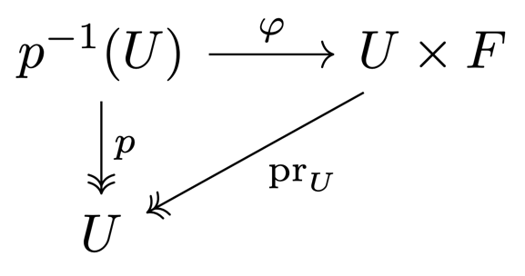

6 Compactness
Compact spaces
Definition 6.1
Compact space
A topological space \(X\) is compact if for all open covers \(\{U_i\}_{i\in I}\) of \(X\), there exists a finite subcover \(\{U_j\}_{j\in J \subseteq I}\) of \(X\).
Theorem 6.2
Equivalent condition for compactness
Let \(X\) be a topological space. The following statements are equivalent:
Proof
\(\begin{align*} \text{Let } & X \text{ be a compact space} \\ & (A_i)_{i\in I} \text{ be such a family of closed sets} \end{align*}\)
\(\begin{align*} \implies X &= X \setminus \bigcap_{i\in I} A_i \\ &= \bigcup_{i\in I} (X \setminus A_i) \end{align*}\)
\(\begin{align*} & \implies \exists J \subseteq I \text{ finite s.t. } X = \bigcup_{j\in J} (X \setminus A_j) \end{align*}\)
\(\begin{align*} \implies \emptyset &= X \setminus \bigcup_{j\in J} (X \setminus A_j) \\ &= \bigcap_{j\in J} A_j \end{align*}\)
Let \(\F\) be a filter on \(X\) and assume it has no cluster point.
\(\begin{align*} & \implies \bigcap_{F \in \F} \overline F = \emptyset \\ & \implies \exists G \subseteq \F \text{ finite } : \bigcap_{F \in G} \overline F = \emptyset \\ & \implies \emptyset \in G \subseteq \F & \contradiction \end{align*}\)
\(\begin{align*} & \text{Let } \F \text{ be an ultrafilter on } X \\ & \overset{(3)}{\implies} \exists\, x \in X : x \in \bigcap_{F \in \F} \overline F \\ & \implieshref{../05_convergence#t530}{T.5.30} \exists\, \G \supseteq \F : \G \to x \end{align*}\)
As \(\F\) is maximal, we have \(\F = \G\) and \(\F \to x\).
Let \(\{U_i\}_{i\in I}\) be an open cover of \(X\), and assume it has no finite subcover.
Then, for all \(L \subseteq I\) finite, we have that
This family is closed under intersections:
By T.5.38, we can extend the filter \(\F\) generated by this family to an ultrafilter \(\G\).
\(\begin{align*} \overset{(4)}{\implies} & \exists\, x \in X : \G \to x \\ \iff & \Neigh_x \subseteq \G \\ \implies & \exists\, i \in I : U_i \in \Neigh_x \\ \end{align*}\)
By the construction of \(\F \subseteq \G\), we have that \((X \setminus U_i) \in \F\), so \((X \setminus U_i) \cap U_i = \emptyset \in \G\). This is a contradiction.
Properties of compact spaces
Theorem 6.3
Alexander's subbase theorem
A topological space \(X\) is compact if every open cover of \(X\) by elements of a subbasis \(S\) for the topology on \(X\) has a finite subcover.
Proof
Assume \(X\) is not compact.
\(\begin{align*} \implieshref{#t62}{T.6.2} & \exists\, \F \text{ non-converging ultrafilter on } X \\ \implies & \forall\, x \in X\ \exists\, U_x \in S\setminus \F \\ \implies & \{U_x\}_{x \in X} \text{ is an open cover of } X \text{ with elements from } S \\ \implies & \exists\, Y \subseteq X \text{ infinite } : X = \bigcup_{y \in Y} U_y \\ \end{align*}\)
\(\begin{align*} & \F \text{ is an ultrafilter and } U_y \notin \F \\ & \implies X \setminus U_y \in \F \\ & \implies \bigcap_{y \in Y} (X \setminus U_y) = \emptyset \in \F & \contradiction \end{align*}\)
Example 6.4
Let \(I = [0, 1] \subseteq \R\). A subbasis is
\(\begin{align*} \text{Let } & (U_i)_{i\in I} \text{ be an open cover of } I \text{ with elements from } S \\ & t := \sup\{a | [0, a) \in \{U_i\}_{i\in I}\} \\ \end{align*}\)
\(\begin{align*} \implies & \exists\, \begin{cases} c < t : (c, 1] \in \{U_i\}_{i\in I} \text{ contains } t \\ d > c : [0, d) \in \{U_i\}_{i\in I}, \text{ by the definition of } \sup \end{cases} \\ \implies & [0, d) \cup (c, 1] = [0, 1] \end{align*}\)
Compact sets and continuous maps
Proposition 6.5
Surjections preserve compactness
\(\begin{align*} \text{Let } & X \text{ be a compact space} \\ & f: X \to Y \text{ be a continuous surjection} \\ \end{align*}\)
Proof
\(\begin{align*} & \text{Let } \{V_i\}_{i\in I} \text{ be an open cover of } Y \\ & \implies \{f^{-1}(V_i)\}_{i\in I} \text{ is an open cover of } X \\ & \implies \exists\, J \subseteq I \text{ finite } : X = \bigcup_{j\in J} f^{-1}(V_j) \\ \end{align*}\)
\(\begin{align*} \implies Y &= f\left(\bigcup_{j\in J} f^{-1}(V_j)\right) \\ &= \bigcup_{j\in J} f\Big(f^{-1}(V_j)\Big) \\ &\subseteq \bigcup_{j\in J} V_j \\ &\subseteq Y \end{align*}\)
So \(\{V_j\}_{j\in J}\) is a finite subcover of \(Y\). Hence, \(Y\) is compact.
Corollary 6.6
Compact sets have compact images
\(\begin{align*} \text{Let } & f ; X \to Y \text{ be a continuous map} \\ & A \subseteq X \text{ be a compact set} \\ \end{align*}\)
Definition 6.7
Proper map
A continuous map \(f: X \to Y\) is proper if
Remark 6.8
Some authors use a different definition. They say that a map \(f: X \to Y\) is proper if it is a closed map with compact fibers.
Proposition 6.9
Closed maps with compact fibers are proper
Proof
\(\begin{align*} \text{Let } & K \subseteq Y \text{ be a compact set} \\ & (U_i)_{i\in I} \text{ be an open cover of } f^{-1}(K) \end{align*}\)
\(\begin{align*} & \implies \implies \forall\, i \in I\ \exists\, V_i \in \O_X : U_i = V_i \cap f^{-1}(K) \\ & \implies \forall\, x \in K : (V_i \cap f^{-1}(x))_{i\in I} \text{ is an open cover of the compact space } f^{-1}(x) \\ & \implies \exists\, J_x \subseteq I \text{ finite } : f^{-1}(x) = \bigcup_{j\in J_x} \Big(V_j \cap f^{-1}(x)\Big) \end{align*}\)
\(\begin{align*} \text{Let } & O_x := \bigcup_{j\in J_x} V_j \\ & L_x := X \setminus O_x \end{align*}\)
\(\begin{align*} & \implies \begin{cases} O_x \in \O_X \\ f^{-1}(x) \subseteq O_x \quad (i) \\ \end{cases} \\ & \implies L_x \subseteq X \text{ is closed} \\ & \implies \begin{cases} f(L_x) \subseteq Y \text{ is closed} \\ x \notin f(L_x) \end{cases} \\ & \implies W_x := Y \setminus f(L_x) \in \Neigh_x^Y \text{ is an open neighborhood} \end{align*}\)
\(\begin{align*} \implies f^{-1}(W_x) &= f^{-1}(Y) \setminus f^{-1}(f(L_x)) \\ &= X \setminus f^{-1}\Big(f(X \setminus L_x)\Big) \\ & \subseteq X \setminus L_x \\ &= O_x \end{align*}\)
So we have an open cover \((W_x \cap K)_{x \in K}\) of \(K\).
\(\begin{align*} & \implies \exists\, P \subseteq K \text{ finite } : K = \bigcup_{x\in P} (W_x \cap K) \\ \end{align*}\)
\(\begin{align*} \implies f^{-1}(K) &= f^{-1}\left(\bigcup_{x\in P} (W_x \cap K)\right) \\ &= \bigcup_{x\in P} f^{-1}(W_x \cap K) \\ &\subseteq \bigcup_{x\in P} O_x \\ &= \bigcup_{x\in P} \bigcup_{j\in J_x} V_j \\ \end{align*}\)
\(\begin{align*} \implies f^{-1}(K) &= f^{-1}(K) \cap \left(\bigcup_{x\in P} \bigcup_{j\in J_x} V_j\right) \\ &= \bigcup_{x\in P} \bigcup_{j\in J_x} U_j \end{align*}\)
Products of compact spaces
Proposition 6.10
Compact factors yield closed and proper projections
Let \(X\) be compact. Then \(\pr_Y : X \times Y \to Y\) is a closed and proper map.
Proof
\(\begin{align*} \text{Let } & C \subseteq X \times Y \text{ be a closed set} \\ & y \in Y \setminus \pr_Y(C) \end{align*}\)
\(\begin{align*} & \implies \forall\, x \in X : (x, y) \notin C \\ & \implies \forall\, x \in X\ \exists\, U_x \in \Neigh_x^X, V_x \in \Neigh_y^Y \text{ open } : (U_x \times V_x) \cap C = \emptyset \\ & X \text{ is compact} \\ & \implies \exists\, (x_i)_{i=1}^n \subseteq X : X = \bigcup_{i=1}^n U_{x_i} \\ & \implies V := \bigcap_{i=1}^n V_{x_i} \in \O_Y \\ & \implies (X \times V) \cap C = \left[\left(\bigcup_{i=1}^n U_{x_i}\right) \times \left(\bigcap_{i=1}^n V_{x_i}\right)\right] \cap C = \emptyset \\ & \implies y \in V \subseteq Y \setminus \pr_Y(C) \\ & \implies \pr_Y(C) \text{ is closed} \end{align*}\)
The fibers of \(\pr_Y\) are compact, so by P.6.9, \(\pr_Y\) is proper.
Corollary 6.11
Binary products of compact spaces are compact
Let \(X\) and \(Y\) be compact spaces. Then \(X \times Y\) is compact.
Theorem 6.12
Tychonoff's theorem
A non-empty product space \(\displaystyle X = \prod_{i\in I} X_i\) is compact \(\iff\) every \(X_i\) is compact.
Proof
Let \(X\) be compact. The projections \(\pr_i : X \to X_i\) are continuous surjections, so by P.6.5, \(X_i\) is compact.
\(\begin{align*} & \text{Let } \F \text{ be an ultrafilter on } X \\ & \implieshref{../05_convergence#t540}{T.5.40} \pr_i(\F) \text{ is an ultrafilter on } X_i \\ & \implieshref{#t62}{T.6.2} \pr_i(\F) \text{ converges in } X_i \\ & \implieshref{../05_convergence#t528}{T.5.28} \F \text{ converges too} \\ & \implieshref{#t62}{T.6.2} X \text{ is compact} \end{align*}\)
Compactness and closure
Theorem 6.13
Closed sets in compact spaces
- Every closed subset of a compact space is a compact space.
- Every compact subspace of a Hausdorff space is closed.
Proof
\(\begin{align*} \text{Let } & C \subseteq X \text{ be a closed set} \\ & \{U_i\}_{i\in I} \text{ be an open cover of } C \end{align*}\)
\(\begin{align*} & \implies \exists\, V_i \in \O_X : U_i = V_i \cap C \text{ forming an open cover of } X \\ & \implies \exists\, J \subseteq I \text{ finite } : X = \bigcup_{j\in J} V_j \\ & \implies C \subseteq \bigcup_{j\in J} U_j \end{align*}\)
\(\begin{align*} \text{Let } & K \subseteq X \text{ be a compact set} \\ & y \in X \setminus K \end{align*}\)
\(\begin{align*} & \!\overset{T_2}{\implies} \forall\, x \in K\ \exists\, U_x \in \Neigh_x, V_x \in \Neigh_y : U_x \cap V_x = \emptyset \\ & (U_x \cap K)_{x \in K} \text{ is an open cover of } K \\ & \implies \exists\, P \subseteq K \text{ finite } : K = \bigcup_{x\in P} (U_x \cap K) \\ & \implies V:= \bigcap_{x\in P} V_x \in \Neigh_y \text{ is open} \\ & V \text{ is disjoint from all } U_x, \text{ so } V \cap K = \emptyset \\ & \implies V \subseteq X \setminus K \\ & \implies K \text{ is closed} \end{align*}\)
Theorem 6.14
Heine-Borel theorem
Let \(K \subseteq \R^d\)
Proof
By T.6.13, \(K\) is closed.
\(\begin{align*} & (B_n(0))_{n\in\N} \text{ is an open cover of } K \\ & \implies \exists\, N \in \N : \bigcup_{n \le N} (B_n(0) \cap K) = K \\ & \implies K \subseteq B_N(0) \text{ is bounded} \end{align*}\)
Corollary 6.15
Extrema on compacta
A continuous function on a compact space attains its maximum and minimum.
Theorem 6.16
Every compact Hausdorff space is regular
Proof
\(\begin{align*} \text{Let } & A \subseteq X \text{ be closed} \\ & x \in X \setminus A \end{align*}\)
\(\begin{align*} \overset{T_2}{\implies} & \forall\, a \in A\ \exists\, U_a \in \Neigh_x, V_a \in \Neigh_a : U_a \cap V_a = \emptyset \\ \end{align*}\)
Additionally, by T.6.13, \(A\) is compact.
\(\begin{align*} & \implies \exists\, B \subseteq A \text{ finite } : A \subseteq \bigcup_{a \in B} V_a \end{align*}\)
\(\begin{align*} \text{Let } & V := \bigcup_{a \in B} V_a \\ & U := \bigcap_{a \in B} U_a \end{align*}\)
\(\begin{align*} \implies & V, U \in \O \text{ s.t.} \\ &\quad \begin{cases} x \in U \\ A \subseteq V \\ U \cap V = \emptyset \end{cases} \\ \implies & X \text{ is } T_3 \end{align*}\)
\(T_1\) follows trivially from \(T_2\).
Theorem 6.17
Every compact Hausdorff space is normal
Proof
By T.6.16, \(X\) is regular. Let \(A, B \subseteq X\) be closed and disjoint. Then, \(A\) and \(B\) are compact by T.6.13.
\(\begin{align*} \overset{T_3}{\implies} & \forall\, c \in C\ \exists\, U_c, V_c \in \O \text{ s.t.} \\ &\quad \begin{cases} c \in U_c \\ D \subseteq V_c \\ U_c \cap V_c = \emptyset \end{cases} \\ \implies & \exists\, \tilde C \subseteq C \text{ finite } : C \subseteq \bigcup_{c \in \tilde C} U_c \\ \end{align*}\)
\(\begin{align*} \text{Let } & U := \bigcup_{c \in \tilde C} U_c \\ & V := \bigcap_{c \in \tilde C} V_c \end{align*}\)
\(\begin{align*} \implies & U, V \in \O \text{ s.t.} \\ &\quad \begin{cases} A \subseteq U \\ B \subseteq V \\ U \cap V = \emptyset \end{cases} \\ \implies & X \text{ is } T_4 \end{align*}\)
Lemma 6.18
Closed map lemma
\(\begin{align*} \text{Let } & X \text{ be compact} \\ & Y \text{ be Hausdorff} \\ & f: X \to Y \text{ be continuous} \\ \end{align*}\)
Proof
Let \(C \subseteq X\) be closed.
\(\begin{align*} \implieshref{#t613}{T.6.13} & C \text{ is compact} \\ \implieshref{#c66}{C.6.5} & f(C) \text{ is compact} \\ \implieshref{#t613}{T.6.13} & f(C) \text{ is closed} \end{align*}\)
Locally compact Hausdorff spaces
Definition 6.19
Locally compact space
A topological space \(X\) is locally compact if
Theorem 6.20
Locally compact Hausdorff spaces are regular
Proof
By P.4.6, it suffices to show that the closed neighborhoods form a neighborhood basis.
\(\begin{align*} \text{Let } & x \in X \\ & U \in \Neigh_x^X \end{align*}\)
\(\begin{align*} \implies & \exists\, K \in \Neigh_x \text{ compact} \\ \implieshref{#t613}{T.6.13} & K \text{ is closed} \\ \end{align*}\)
Both \(K\) and \(U\) are neighborhoods of \(x\), so \(U \cap K \in \Neigh_x\). Furthermore, by T.6.16, \(X\) is regular.
\(\begin{align*} & \implieshref{../04_separation#p46}{P.4.6} \exists\, V \in \Neigh_x^K \text{ closed } : V \subseteq U \cap K \\ \end{align*}\)
As \(V\) is closed in \(K\) and \(K\) is closed in \(X\), \(V\) is closed in \(X\). Additionally, \(V \in \Neigh_x^K\) and \(K \in \Neigh_x^X\), so \(V \in \Neigh_x^X\).
Hence, we have a closed neighborhood \(V\) of \(x\) contained in \(U\).
Theorem 6.21
Compact neighborhood basis
In a locally compact Hausdorff space, the compact neighborhoods form a neighborhood basis.
Proof
\(\begin{align*} \text{Let } & x \in X \\ & U \in \Neigh_x \end{align*}\)
By T.6.20, \(X\) is regular, so by P.4.6, there is \(V \in \Neigh_x\) closed and contained in \(U\).
As \(X\) is locally compact, there is a compact neighborhood \(K \in \Neigh_x\). Then, \(K \cap V \subseteq U\) is another compact neighborhood of \(x\).
Remark 6.22
The Hausdorff condition is crucial for T.6.21.
\(\begin{align*} \text{Let } & X = \R \cup \{\infty\} \\ & \O = \{\R \setminus A \mid A \subseteq \R \text{ countable}\} \cup \{\emptyset, X\} \end{align*}\)
Then, \(X\) is compact. Further, \(\R \in \O\), but does not contain any compact neighborhood.
Proposition 6.23
Products and quotient maps
\(\begin{align*} \text{Let } & K \text{ be a locally compact Hausdorff space} \\ & f : X \to Y \text{ be a quotient map} \end{align*}\)
Proof
\(\begin{align*} \text{Let } & g : Y \times K \to W \text{ be a map} \\ & h = g \circ (f \times \id_K) : X \times K \to W \end{align*}\)
We assume that \(h\) is continuous. By T.2.38, we need to show that \(g\) is continuous. Then, \(f \times \id_K\) is a quotient map.
\(\begin{align*} \text{Let } & (q, k) \in Y \times K \\ & U \in \Neigh_{q(q, k)}^W \text{ open} \\ & p \in X : f(p) = q \end{align*}\)
\(\begin{align*} & \implies h(p, k) = g(q, k) \\ & h \text{ is continuous} \\ & \implies \exists\, N \in \Neigh_k^K \text{ compact } : h(p, N) \subseteq U & \text{Let } A := \{y \in Y \mid g(y, N) \subseteq U\} \end{align*}\)
Claim: \(A\) is open
\(\begin{align*} f^{-1}(A) &= \{x \in X \mid g\Big(f(x), N\Big) \subseteq U\} \\ &= \{x \in X \mid h(x, N) \subseteq U\} \\ X \setminus f^{-1}(A) &= \{x \in X \mid h(x, N) \nsubseteq U\} \\ &= \pr_X\Big(X \times N \setminus h^{-1}(U)\Big) \end{align*}\)
By P.6.10, \(\pr_X\) is a closed map.
\(\begin{align*} & \implies X \setminus f^{-1}(A) \text{ is closed} \\ & \implies f^{-1}(A) \text{ is open} \\ & \iff A \text{ is open} \end{align*}\)
Hence \(A \times N\) is a neighborhood of \((q, k)\) s.t. \(h(A \times N) \subseteq U\). Thus, \(g\) is continuous.
Definition: Locally closed
A locally closed set is a set that is the intersection \(U \cap C\) of an open set \(U\) and a closed set \(C\).
Lemma 6.24
Locally closed an locally compact
In a locally compact Hausdorff space, any locally closd set is a locally compact space.
Proof
Let \(x \in U \cap C\).
\(\begin{align*} \implies & \exists K \in \Neigh_x \text{ compact } : K \subseteq U \\ \implieshref{#t613}{T.6.13} & K \cap C \text{ is compact} \end{align*}\)
Hence, \(K \cap C \in \Neigh_x\) is a compact neighborhood contained in \(U \cap C\).
One-point compactification
Definition 6.25
One-point compactification
\(\begin{align*} \text{Let } & X \text{ be a locally compact Hausdorff space} \\ & X^* := X \cup \{\infty\} \\ & \mathcal C := \{L \cup \{\infty\} \mid L \subseteq X \text{ closed}\} \cup \{K \mid K \subseteq X \text{ compact}\} \text{ be the closed sets of } X^* \end{align*}\)
If \(X\) is not compact, \(X^*\) is called the one-point compactification of \(X\).
Remark 6.26
\(\mathcal C\) is a topology on \(X^*\), and \(X\) is a subspace of \(X^*\).
Theorem 6.27
Properties of one-point compactification
For a non-compact \(X\), the space \(X^*\) is a compactification of \(X\):
- \(X^*\) is a compact Hausdorff space.
- If \(X\) is not compact, then \(X\) is dense in \(X^*\).
Proof
We need to separate \(x\) from \(\infty\) for all \(x \in X\).
\(\begin{align*} & \text{Let } x \in X \\ & \implies \exists\, K \in \Neigh_x^X \text{ compact} \\ & \implies K \text{ and } X \setminus K \text{ separate } x \text{ and } \infty \end{align*}\)
\(\begin{align*} & \text{Let } (U_i)_{i\in I} \text{ be an open cover of } X^* \\ & \implies \exists\, n \in I : \infty \in U_n \\ & \implies K \subseteq X \text{ compact } : U_n = X^* \setminus K \\ & (U_i \cap K)_{i \in I} \text{ is an open cover of } K \\ & \implies \exists\, J \subseteq I \text{ finite } : K = \bigcup_{j\in J} (U_j \cap K) \\ & \text{Let } J^* := J \cup \{n\} \end{align*}\)
\(\begin{align*} \implies \bigcup_{j \in J^*} U_j &\supseteq \left(\bigcup_{j \in J} U_j\right) \cup U_n &= K \cup (X^* \setminus K) \\ &= X^* \end{align*}\)
So \((U_j)_{j\in J^*}\) is a finite subcover of \(X^*\).
\(\begin{align*} & \text{Let } U \in \Neigh_\infty^{X^*} \text{ be open} \\ & \implies \exists\, K \subseteq X \text{ compact } : U = X^* \setminus K \\ & X \text{ is not compact, so } X \neq K \\ & \implies U \cup X = X \setminus K \neq \emptyset \\ & \implies \infty \in \overline X \\ & \implies \overline X = X^* \end{align*}\)
Remark 6.28
A map \(f : X \to Y\) between locally compact Hausdorff spaces is proper \(\iff f\) extends to a continuous map \(f^* : X^* \to Y\) by \(f^*(\infty_X) = \infty_Y\).
Proposition 6.29
Images of proper maps
\(\begin{align*} \text{Let } & X, Y \text{ be locally compact Hausdorff spaces} \\ & f : X \to Y \text{ be a proper map} \end{align*}\)
Proof
By R.6.28, \(f\) extends to a continuous map \(f^* : X^* \to Y\).
\(\begin{align*} & X^* \text{ is compact and } Y \text{ is Hausdorff} \\ & \implieshref{#t618}{T.6.18} f^* \text{ is closed} \\ & \text{Let } C \subseteq X \text{ be closed} \\ & \overset{\text{DEF } X^*}{\implies} C \cup \{\infty\} \subseteq X^* \text{ is closed} \\ & \,\implies f^*(C \cup \{\infty\}) = f(C) \cup \{f(\infty)\} \subseteq Y^* \text{ is closed} \\ & \overset{\text{DEF } Y^*}{\implies} f(C) \text{ is closed} \end{align*}\)
Again, by L.6.18, \(f^*\) is closed, so \(f^*(X^*)\) is closed in \(Y^*\).
\(\begin{align*} & Y^*\setminus Y = \{\infty\} \text{ is closed in } Y^* \\ & \implies Y \text{ is open in } Y^* \\ & \implies f(X) = f^*(X^*) \cap Y \text{ is locally closed in } Y \\ & \!\implieshref{#l624}{L.6.24} f(X) \text{ is locally compact} \end{align*}\)
Fiber bundles
Definition 6.30
Fiber bundle
A fiber bundle consists of
- a base space \(B\), a fiber \(F\), and a total space \(E\),
- and a continuous surjection \(p : E \to B\)
such that for all \(b \in B\), there is
- an open neighbourhood \(U \in \Neigh_b^B\) (trivializing neighborhood),
- and a homoemorphism \(\phi : p^{-1}(U) \to U \times F\) such that\(\pr_U \circ\, \phi = p\).

Example 6.31
| Base space | Fiber | |
|---|---|---|
| Annulus, Möbius strip | \(S^1\) | \([-1, 1]\) |
| Torus, Klein surface/bottle | \(S^1\) | \(S^1\) |
Proposition 6.32
Fiber bundles with compact fibers are proper
Let \(p : E \to B\) be a fiber bundle with fiber \(F\).
Proof
Any fiber \(p^{-1}\{x\}\) of a proper map \(p\) is compact.
\(\begin{align*} & \pr_U : U\times F \to U \text{ is a closed map} \\ & \phi \text{ is a homeomorphism} \\ & \implies p = \pr_U \circ \phi : p^{-1}(U) \to U \text{ is closed} \\ & \implies p : E \to B \text{ is closed} \\ & \implieshref{#p69}{P.6.9} p \text{ is proper} \end{align*}\)
Example 6.33
The one-point compactification of \(\C \cong \R^2\) is homeomorphic to the sphere \(S^2\) via the inverse stereographic projection.
The division operator \((z, w) \mapsto \frac{z}{w}\) extends to a continuous, surjective map
by defining \(\frac{z}{0} = \infty\) for \(z \neq 0\) (the Hopf map):
We have that \(p(z, w) = p(\tilde z, \tilde w) \iff (\tilde z, \tilde w) = e^{i\theta}(z, w)\).
The Hopf map yields a fiber bundle with fiber \(S^1\) (Hopf fibration), which has many interesting properties:
- any two fibers are linked circles in \(S^3\).
- the Hopf map cannot be continuously extended to a constant map.